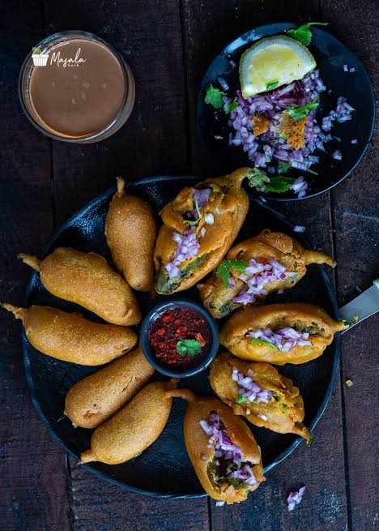
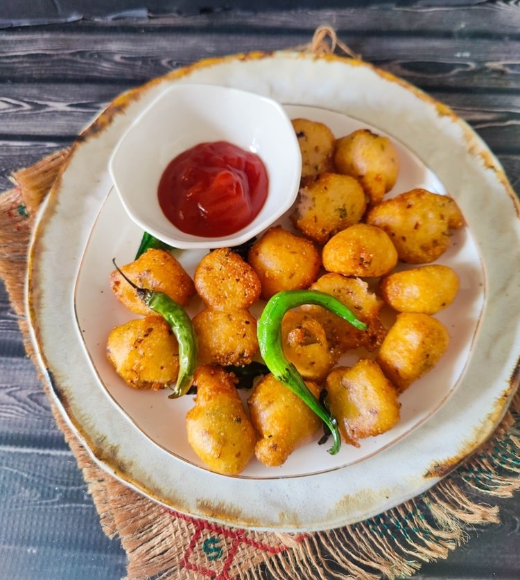
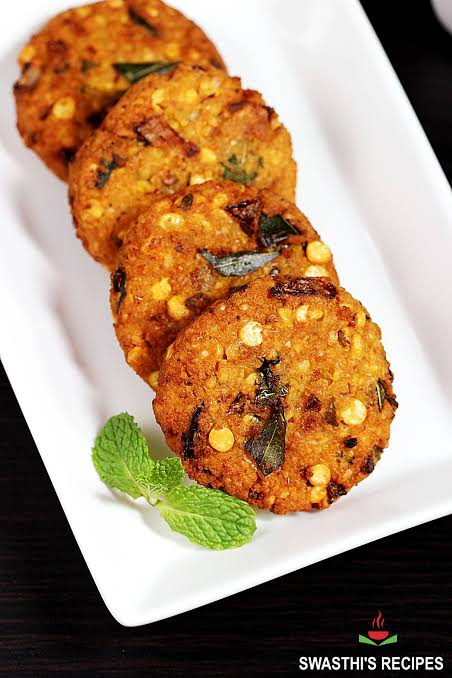
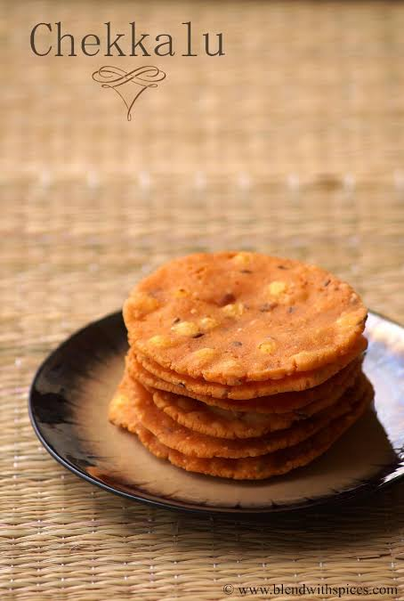
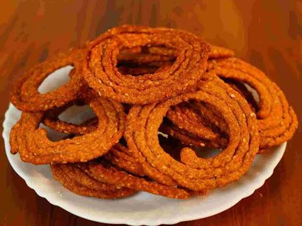
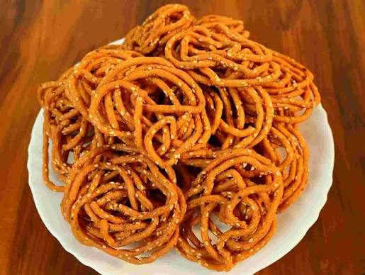
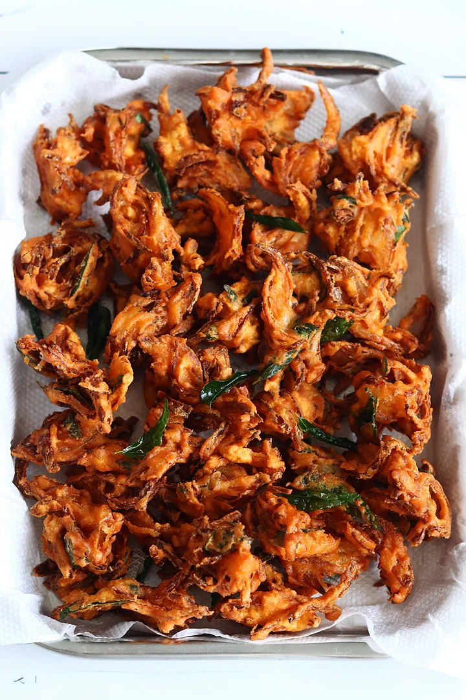
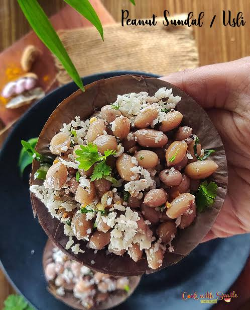

Mirchi Bajji is prepared using 8–10 large green chilies, 1 cup of gram flour (besan), 2 tablespoons of rice flour, ½ teaspoon turmeric powder, 1 teaspoon red chili powder, ½ teaspoon ajwain (carom seeds), a pinch of baking soda, salt to taste, water as required, and oil for deep frying.
Slit the green chilies lengthwise and remove the seeds if desired. Prepare a thick batter by mixing gram flour, rice flour, turmeric powder, red chili powder, ajwain, baking soda, salt, and water. Heat oil in a deep pan, dip each chili into the batter, and coat it evenly. Deep fry until golden brown and crispy. Drain on paper towels and serve hot with chopped onions, lemon juice, or coconut chutney.

Punugulu are made using 2 cups of idli or dosa batter, 1 finely chopped onion, 2 chopped green chilies, a 1-inch piece of chopped ginger, chopped curry leaves, chopped coriander leaves, 1 teaspoon cumin seeds, salt if required, and oil for deep frying.
Mix the onions, green chilies, ginger, curry leaves, coriander leaves, and cumin seeds into the batter. Heat oil in a deep frying pan and drop small spoonfuls of batter into the hot oil. Fry until they become golden brown and crispy on all sides. Remove the punugulu, drain excess oil, and serve hot with peanut or coconut chutney.

Masala Garelu is prepared using 1 cup of whole urad dal, 1 finely chopped onion, 2 chopped green chilies, a 1-inch piece of chopped ginger, 1 teaspoon cumin seeds, chopped curry leaves, chopped coriander leaves, salt to taste, and oil for deep frying.
Soak the urad dal for 4–6 hours and grind it into a thick batter with very little water. Mix in onions, green chilies, ginger, cumin seeds, curry leaves, coriander leaves, and salt. Heat oil in a deep pan, shape the batter into round vadas with a hole in the center, and fry until golden brown and crispy. Serve hot with coconut chutney or tomato chutney.

Chekkalu are made using 2 cups of rice flour, 2 tablespoons of roasted chana dal, 1 teaspoon cumin seeds, 1 teaspoon sesame seeds, 2 chopped green chilies, chopped curry leaves, butter, salt, water, and oil for deep frying.
Mix rice flour with roasted chana dal, cumin seeds, sesame seeds, green chilies, curry leaves, butter, and salt. Add water gradually to form a soft dough. Shape small portions into thin discs by pressing them with your fingers. Deep fry the discs until they become crisp and golden brown. Cool completely before storing in an airtight container.

Sakinalu are prepared using 2 cups of rice flour, 2 tablespoons of sesame seeds, 1 teaspoon cumin seeds, salt, water, and oil for deep frying.
Mix rice flour, sesame seeds, cumin seeds, and salt with enough water to make a soft dough. Shape the dough into spiral rings on a clean cloth or plastic sheet. Heat oil in a deep pan and carefully transfer the spirals into the hot oil. Fry until they become crisp and light golden in color. Allow them to cool before serving or storing.

Janthikalu are made using 2 cups of rice flour, ½ cup of roasted gram flour, 1 teaspoon cumin seeds, 1 teaspoon sesame seeds, 2 tablespoons butter, salt to taste, water, and oil for deep frying.
Mix rice flour, roasted gram flour, cumin seeds, sesame seeds, butter, and salt. Add water gradually to prepare a soft dough. Fill the dough into a murukku press fitted with a star-shaped disc. Press the dough directly into hot oil in circular shapes and fry until golden and crispy. Drain excess oil and cool before storing.

Onion Pakodi is prepared using 2 large onions, 1 cup of gram flour (besan), 2 tablespoons of rice flour, 2 chopped green chilies, curry leaves, 1 teaspoon red chili powder, ½ teaspoon turmeric powder, salt to taste, a pinch of baking soda (optional), and oil for deep frying.
Slice the onions thinly and mix them with gram flour, rice flour, green chilies, curry leaves, turmeric, red chili powder, salt, and a little water to form a thick coating. Heat oil in a deep pan and drop small portions of the mixture into the hot oil. Fry until golden brown and crispy. Drain excess oil and serve hot with tomato sauce or chutney.

Peanut Sundal is made using 2 cups of boiled peanuts, 1 teaspoon mustard seeds, 1 teaspoon split urad dal, 2 dried red chilies, curry leaves, 2 tablespoons grated coconut, salt to taste, and 2 teaspoons oil.
Heat oil in a pan and add mustard seeds, urad dal, dried red chilies, and curry leaves. Once they splutter, add the boiled peanuts and salt, and mix well. Cook for 2–3 minutes, then stir in the grated coconut. Mix gently and serve warm as a healthy Andhra-style snack.
